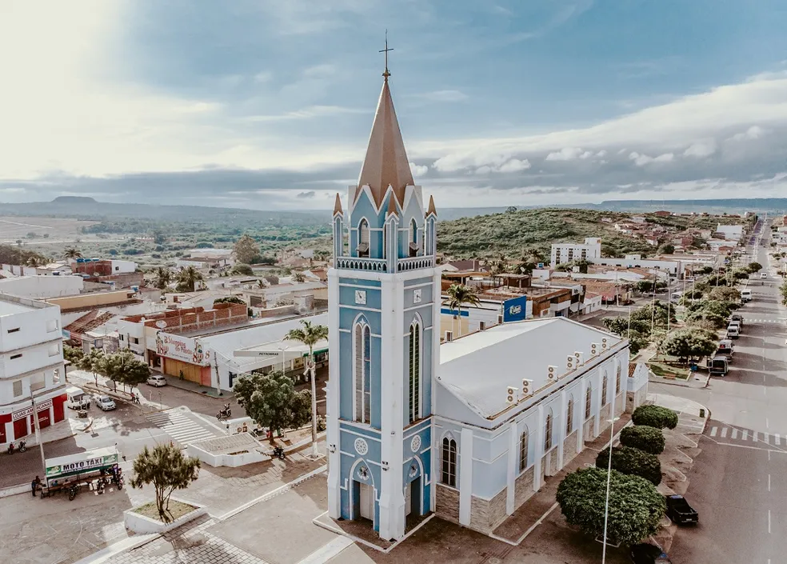
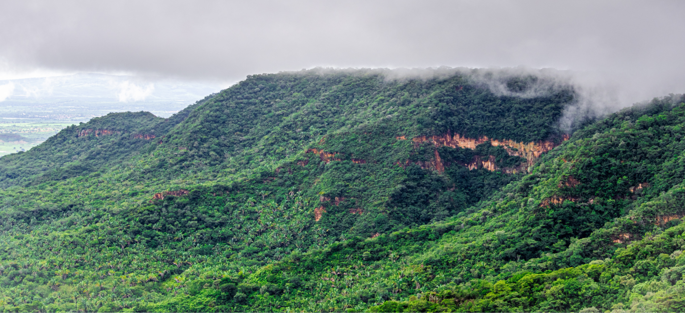
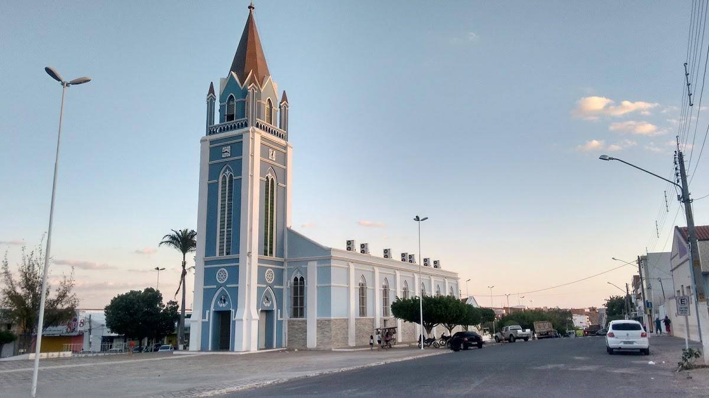
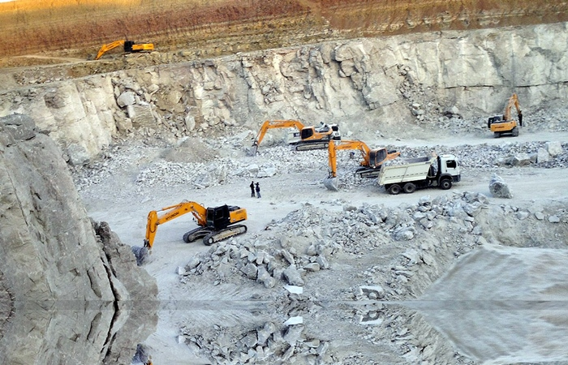

Bem-vindo à
CONHEÇA
Araripina é um município estratégico localizado no extremo oeste do estado de Pernambuco, no Sertão do Araripe, a cerca de 690 km da capital, Recife. Situada na tríplice fronteira com o Piauí e o Ceará, a cidade é o coração do maior polo gesseiro do Brasil (responsável por cerca de 95% da produção nacional) e vem se destacando fortemente na geração de energia eólica e na agricultura.
📍 Distritos
O município é dividido administrativamente em 7 distritos: a sede (Araripina), Bom Jardim do Araripe (Rancharia), Gergelim, Lagoa do Barro, Morais, Nascente e Vila Serrânia.
👥 População
A cidade possui 85.616 habitantes (Censo IBGE 2022), com estimativas recentes ultrapassando as 90 mil pessoas, sendo o município mais populoso da região do Araripe.
⛰️ Altitude
A cidade está localizada a aproximadamente 622 metros acima do nível do mar, aos pés da imponente Chapada do Araripe.
☀️ Clima
Possui clima Semiárido quente, típico do sertão nordestino, com um período de chuvas concentrado geralmente entre os meses de janeiro a abril.
RAÍZES
Uma jornada de séculos que moldou a identidade de Araripina.

A região começou a ser colonizada na metade do século XIX. O primeiro povoado formou-se ao redor de uma capela e pertencia à cidade de Ouricuri, sendo inicialmente batizado de São Gonçalo.
Em 11 de setembro de 1928, o distrito conquista sua emancipação política, desmembrando-se de Ouricuri e tornando-se um município independente.
Pelo Decreto-Lei Estadual nº 952, a cidade deixa de se chamar São Gonçalo e passa a ser oficialmente denominada Araripina, em homenagem à sua proximidade com a Chapada do Araripe.
Com a descoberta das enormes reservas de gipsita (pedra de gesso), a cidade transforma-se no motor econômico do Sertão do Araripe, expandindo seu comércio e indústria.
EXPLORE
Lugares e forças que contam a história e revelam a beleza de Araripina.

Formação geológica impressionante e uma reserva ecológica vital. Oferece mirantes incríveis, trilhas e uma biodiversidade que contrasta fortemente com a paisagem do semiárido.

Principal templo católico e marco histórico da fundação da cidade. A paróquia é o coração da tradicional festa da padroeira, que mobiliza milhares de fiéis todo mês de dezembro.

O grande motor do município. O complexo industrial e minerador de gipsita de Araripina abastece a construção civil, o agronegócio e a medicina de todo o país, gerando milhares de empregos.
Veja a localização de Araripina, Pernambuco, e planeje sua rota até o coração do Sertão do Araripe.